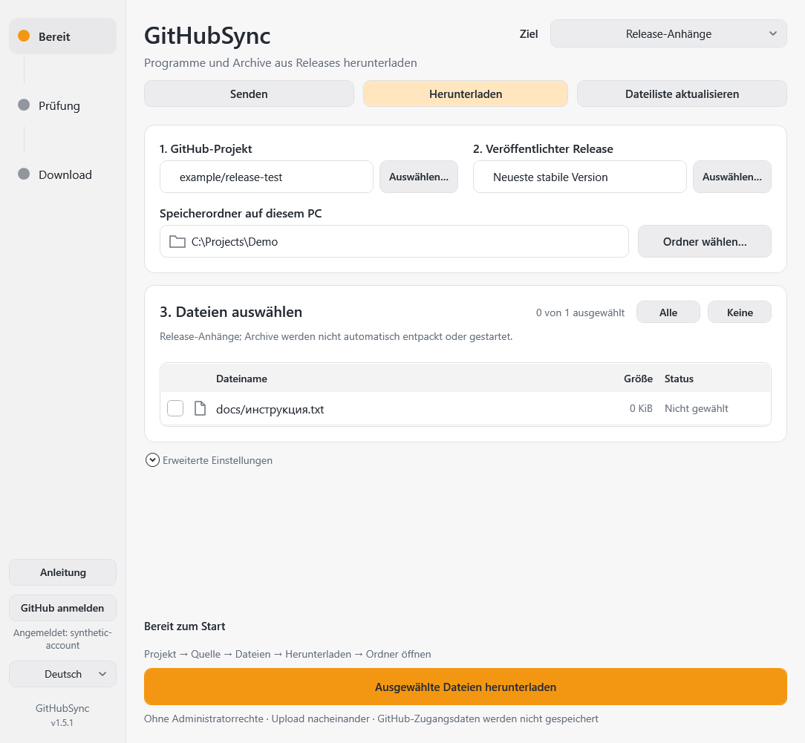
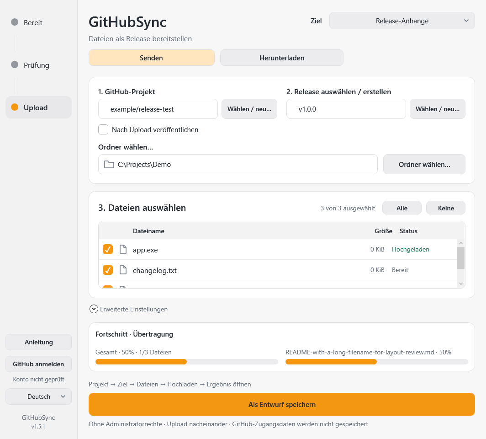
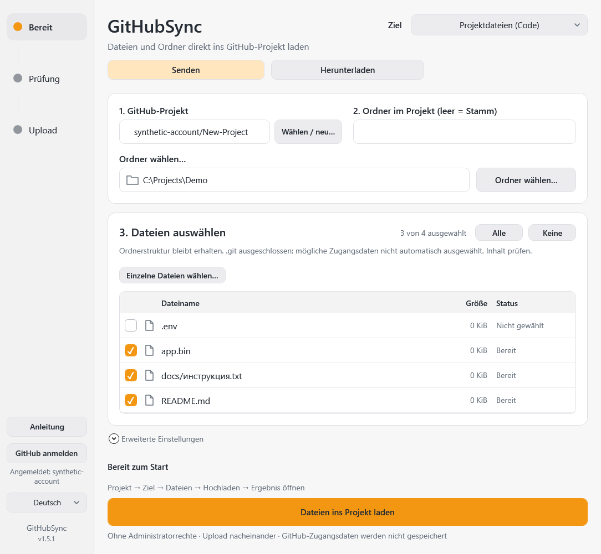

GitHubSync
Dateien zu GitHub senden oder auf den PC herunterladen. Jede Übertragung bestätigen.
Was möchten Sie tun?
Senden: vom PC zu GitHub. Herunterladen: von GitHub auf den PC. Danach Projektdateien (Code) für Dokumente/Ordner oder Release-Anhänge für Programme/Archive wählen. Kein automatisches Ordnerspiegeln: keine selbstständigen Uploads oder Löschungen.
Erster Download: öffentlichen Projektlink einfügen → Liste aktualisieren → lokalen Ordner und Dateien wählen → Download prüfen und bestätigen. Öffentliche Downloads erfordern keine Anmeldung.

Start
- Gesamten Portable-Ordner entpacken und
GitHubSync.exestarten. Kein separates Git installieren; CMD ist nicht nötig. Nicht die einzelne EXE ausartifacts/buildstarten: zugehörige Dateien werden benötigt. - Bei Bedarf Sprache wählen. Erststart: Deutsch.
- Für Uploads und private Projekte GitHub anmelden: Browseranmeldung einschließlich Google/SMS/2FA auf der offiziellen Seite abschließen. Keine Passwörter oder SMS-Codes in die App eingeben. Öffentliche Downloads sind ohne Anmeldung möglich.
- Schritt 1: Wählen / neu…. Eigenes Projekt wählen oder GitHub-Link einfügen. Projekt bedeutet Repository, nicht GitHub Projects.
Zwei Ziele
Projektdateien: Quellcode, Dokumente und Ordner erscheinen unter Code mit Änderungshistorie.
Release-Anhänge: EXE, ZIP und andere fertige Dateien werden Release-Anlagen unter Releases, nicht Code. Einen Ordner vorab als ZIP packen.
Projektdateien
- Projektdateien und Projekt wählen. Zielordner leer lassen für den Repository-Stamm oder relativen Pfad wie
docsangeben. - Ordner wählen…: auch Unterordner werden aufgelistet. Der Inhalt wird hochgeladen, nicht der Name des gewählten Quellordners. Alternativ Einzelne Dateien wählen….
- Auswahl prüfen. Normale Dateien eines neuen Ordners werden ausgewählt, mögliche Zugangsdaten nicht; auch „Alle“ lässt sie aus. Nur nach eigener Inhaltsprüfung manuell auswählen.
- Standardbranch automatisch von GitHub; anderer bestehender Branch unter Erweiterte Einstellungen.
- Dateien ins Projekt laden zeigt zuerst eine read-only Vorschau: Neu / Ersetzen / Unverändert, Projekt und Branch.
- Änderungen hochladen bestätigt Ersetzungen. Schließen bricht ab. Ein Commit für alle Änderungen; kein leerer Commit bei unveränderten Dateien. Andere Dateien werden nie gelöscht.
- Dateien im Projekt öffnen führt zum gewählten Branch/Ordner.
Geänderte lokale Dateien oder ein zwischenzeitlich geänderter Branch stoppen den Vorgang: erneut prüfen. Branchschutz wird nicht umgangen. Erlaubten Branch oder externen Pull-Request-Prozess verwenden.
Vor dem Upload
.git und Links/Junctions werden ausgeschlossen. .env, private Schlüssel und typische Zugangsdaten sind nicht automatisch ausgewählt. Dies ist keine vollständige Geheimnisprüfung. Inhalte selbst prüfen. .gitignore wird nicht automatisch angewendet; unerwünschte Abhängigkeiten/Buildordner abwählen.
Code-Dateien über 100 MiB werden vor dem Schreiben abgelehnt: Release-Anhänge verwenden. Git LFS wird nicht eingerichtet. Leere bestehende Projekte zuerst mit README auf GitHub initialisieren; neue Projekte aus der App enthalten bereits README.
Release-Anhänge
- Release-Anhänge und Projekt wählen.
- Release wählen oder erstellen: vorhandener Entwurf oder Neuer Release, Versionskennung und optionaler Titel, explizite Erstellen-Bestätigung. Noch keine Veröffentlichung.
- Quellordner und Dateien auswählen; hier nur Dateien direkt im Ordner, keine Unterordner.
- Nach Upload veröffentlichen an: Hochladen und veröffentlichen. Aus: Als Entwurf speichern.
- Ziel, Anzahl und Folgen im Dialog bestätigen. Abbruch ohne Upload.
- Erst nach Bestätigung aller ausgewählten Anlagen durch GitHub veröffentlichen. Uploadfehler verhindern Veröffentlichung; bereits übertragene Dateien können im Entwurf bleiben.
Alte Einstellungen bleiben ohne automatische Veröffentlichung. Neue Einstellungen aktivieren die Option mit ausdrücklicher Bestätigung vor dem Upload. Veröffentlichte Releases werden nicht verändert; neue Version erstellen.
Ergebnis und Links
Entwurf öffnen zeigt den tatsächlichen Entwurf. Im Browser mit dem berechtigten Konto anmelden, Anlagen unter Assets oder unten im Bearbeitungsformular finden. Ohne Rechte ist der Entwurf nicht sichtbar.
Release veröffentlichen kann später separat bestätigt werden. Nach Neustart gleiches Projekt/Entwurf/Dateien wählen und unter Erweiterte Einstellungen Prüfen: kein Upload, Aktionen für vorhandenen Entwurf erscheinen.
Nach Veröffentlichung: Release öffnen, Link kopieren für die Releaseseite, Dateilinks mit Kopierknopf pro Anlage. Auch Kontextmenü des Dateinamens bietet Download-Link.
Projekt erstellen
In der Projektliste Neues Projekt erstellen wählen, Namen und bestätigtes Konto prüfen. Privat ist Standard; Abwahl macht das Repository öffentlich. Explizit Projekt auf GitHub erstellen. Persönliches Konto, keine Organisation; initiales README/Commit. Noch kein Datei-Upload oder Release. Bei unbestätigter Antwort erst Liste aktualisieren; kein blinder Erstellungsretry.
Prüfen, Fortschritt und Fehler
Fortschritt bleibt über den Aktionen sichtbar. Code ist erst nach Branch-/Commitbestätigung abgeschlossen, Releases nach Anlagebestätigung, Veröffentlichung nach Prüfung des veröffentlichten Releases. Bei unbekannter Dauer Aktivitätsanzeige statt erfundener Prozentwerte.
Prüfen ist read-only: Code-Vorschau oder Entwurf/Anlagenprüfung. Speichern ist lokal; Uploadstart speichert automatisch. Bestätigte Anlagen werden übersprungen, Namens-/Größenkonflikte nicht gelöscht. GitHub-Umbenennungen werden anhand ID/Originallabel bzw. eindeutigem Legacy-SHA-256 mit API-digest berücksichtigt.
Bei unklarem Schreibergebnis zuerst GitHub prüfen, nicht blind wiederholen oder Anlagen löschen. Zugriff, Konto und Branchschutz prüfen. Fehlerlog: GitHubSync-error.log.
Portable und Einstellungen
EXE, runtime, docs, assets und PS1-Dateien zusammen behalten. Keine Installation/Adminrechte. Internet für GitHub nötig. Token nicht in App-Einstellungen; Anmeldung durch Git Credential Manager. Alte config.json/ui-settings.json bleiben lesbar, getrennte Dateiauswahl für beide Modi. Programmordner muss beschreibbar sein. Fenster 1080×1040 logische Pixel, auf Arbeitsfläche begrenzt und manuell veränderbar. HTML-Hilfe funktioniert offline.


Senden oder herunterladen
Senden überträgt lokale Dateien zu GitHub. Herunterladen speichert GitHub-Dateien auf diesem PC. Kein automatischer Spiegel: Übertragungen benötigen Zustimmung, andere Dateien werden nicht gelöscht. Öffentliche Downloads brauchen keine Anmeldung. Für private Projekte und Uploads im offiziellen Browser anmelden; Google/SMS/2FA bleibt dort.
Projektdateien herunterladen
- Herunterladen und Projektdateien (Code) wählen.
- Repository-Link in Schritt 1 einfügen, etwa
https://github.com/owner/project. - Schritt 2 leer lassen für den Stamm oder GitHub-Ordner wie
docsangeben. Den Branch bei Bedarf in den erweiterten Einstellungen wählen; sonst gilt der Standardbranch. - Dateiliste aktualisieren, lokalen Speicherordner wählen, Dateien markieren. Alle wählt die gesamte angezeigte Ordnerstruktur.
- Ausgewählte Dateien herunterladen, Projekt und Ziel sowie Herunterladen / Ersetzen / Unverändert prüfen. Ersetzungen ausdrücklich bestätigen.
- Nach erfolgreicher Prüfung Lokalen Ordner öffnen.
Relative Pfade unter dem gewählten GitHub-Stamm bleiben erhalten. Jede Aufgabe ist an einen Commit gebunden. Keine Git-Historie, Submodule, Links oder tatsächlichen Git-LFS-Objekte. Große fertige Archive über Release-Anhänge herunterladen.
Programme und Archive herunterladen
- Herunterladen und Release-Anhänge wählen, Projekt-Link einfügen.
- Standard ist der neueste stabile veröffentlichte Release; Auswählen öffnet andere veröffentlichte Versionen.
- Dateiliste aktualisieren, Speicherordner wählen, EXE/ZIP oder andere Anhänge markieren.
- Download prüfen und bestätigen, danach den lokalen Ordner öffnen.
Archive werden nicht automatisch entpackt, Programme nicht automatisch gestartet. Private Projekte bleiben privat.
Pause und Fortsetzen
Download pausieren speichert Teilstücke. Nach Unterbrechung oder Neustart stellt Download fortsetzen… die Auswahl wieder her. Download erneut starten, aktuelle Prüfung und Ersetzungen bestätigen. Fortsetzen verwendet Bytebereiche, wenn der Server diese für dieselbe Datei unterstützt. Eine vollständige Antwort startet die Datei neu, ohne doppelte Bytes anzuhängen. Geänderte Quellen verlangen eine aktualisierte Dateiliste.
Vor Installation werden Größe und verfügbare Prüfsummen geprüft. Fehlende GitHub-Prüfsummen werden als reine Größenprüfung kenntlich gemacht. Teilstücke: .githubsync/partials, Sicherungen ersetzter Dateien: .githubsync/backups, jeweils im Speicherordner. Keine Tokens darin speichern. Teilstücke laufender Aufgaben nicht entfernen. Uploads setzen keine einzelne Datei byteweise fort: bestätigte Anhänge werden übersprungen, der unvollständige Anhang wird neu übertragen.
Infobereich und GitHub-Updates
Schließen blendet das Fenster in den Infobereich aus, bestätigte Übertragungen laufen weiter. Doppelklick öffnet es. Während der Übertragung bewegen sich beide Pfeile im Tray und Fenstersymbol. Beenden im Tray-Menü beendet die App: Downloads werden gesichert, bei Upload-Abbruch erscheint ein Hinweis auf möglicherweise bereits gespeicherte Dateien.
Eine gewählte Quelle wird alle 15 Minuten geprüft, solange die App läuft. Beobachtung in den erweiterten Einstellungen abschalten oder Updates manuell prüfen. Hinweise starten keine Übertragung: Dateiliste aktualisieren, Änderungen ansehen und selbst bestätigen. Hintergrundprüfungen öffnen keinen Anmeldebrowser. Kein automatischer Windows-Start.
OneDrive und Schreibfehler
Normale OneDrive-Cloudordner sind als Quelle und Ziel erlaubt. Echte Links/Junctions und unbekannte Reparse-Typen bleiben gesperrt. Bei nicht verfügbaren Cloud-Dateien Verbindung und Zugriff im Explorer prüfen.
Code-Uploads zeigen übertragene Bytes und verwenden das eingestellte HTTP-Zeitlimit, standardmäßig drei Stunden statt zwei Minuten. Übertragene Bytes bedeuten noch keinen bestätigten Commit.
Fehler nennen Vorgang und HTTP-Status: 401 — erneut anmelden; 403 — Rechte/SSO/API-Limit prüfen; 413 — große Datei als Release-Anhang senden; 422 — Größe, Branch-Regeln und Workflow-Rechte prüfen. Bei Verbindungsabbruch oder unbekanntem Ergebnis zuerst GitHub prüfen. Keine blinden Schreibwiederholungen. Für einen Fehlerbericht genügen Vorgang, Status und Request ID; keine Tokens senden.